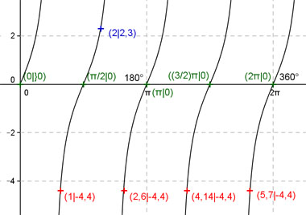

Aufgabe 169 Ergänzen Sie die Wertetabelle für x zwischen 0 und 2π: y = 2 tan2x x 2 1 oder 2,6 oder 4,14 oder 5,7 y 2,3 -4,4 2 Periode = π/2 Berechnung der Nullstellen: 2 tan 2x = 0 ---> Substitution 2x = u --> tan u = 0 --> u = k * π mit k = 0, 1, 2, ... --> Rücksubstitution liefert 2x = k * π |:2 --> x = k * π/2 x1 = 0 oder 0°, x2 = π/2 oder 90°, x3 = π oder 180°, x4 = (3/2)π oder 270° x5 = 2π oder 360°.  Funktionswert an einer Stelle x ermitteln: 2 * 180° x = 2 oder ---------- = 114,6° π f(2) = 2 tan (2 * 2) = 2 tan (2 * 114,6°) = 2,3 gerundet. Berechnung der x-Werte für y = f(x) = -4,4: f(x) = -4,4 eingesetzt, existiert einmal zwischen 0 und π/2 bzw. 0° und 90°, zwischen π/2 und π bzw. 90° und 180°, zwischen π und (3/2)π bzw. 180° und 270° und zwischen (3/2)π und 2π bzw. 270° und 360° (siehe Graph). 2 tan 2x = -4,4 |:2 --> tan 2x = -2,2 --> 2x = arc tan - 2,2 = -1,144 |:2 x = -0,572 (-0,57 gerundet) liegt nicht im Bereich zwischen 0 und 2π --> 1 * 180° x1 = (π/2 - 0,57) = 1 oder ---------- = 57,3° π x2 = (π - 0,57) = 2,6 oder 149° x3 = ((3/2)π - 0,57) = 4,14 oder 237,2° x4 = (2π - 0,57) = 5,7 oder 326,6° gerundet.